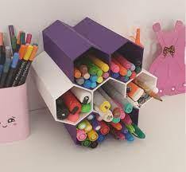
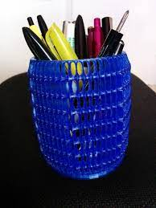
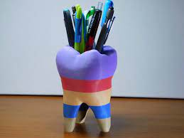
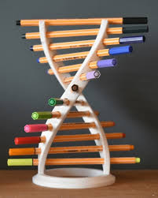
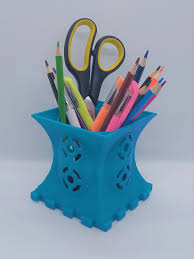
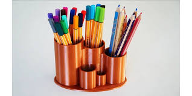

Stock always available, you just have to order online ewith your correct details.30 items on the shelf to purchase
|  |  |  |  |  |  |
Please note this is the minimum price and the bigger the item is charges will apply.
Being a teacher can be a tough decision, get a stationary holder where you can put all your pencils in or pens and you will find your stationay faster and if students need colours you have something perfect so all can use it and no one will lose anything.
| Weight | Scale(length times breath with height | Colours available | Use of the product | Returnable(1-5 days) or not |
|---|---|---|---|---|
| Weight depends on which item ordered. Minimum weight is 0,5 kgs | 90 * 90 *90 (Also depends on which holder is bought) | blue and green | You can put pens, pencils, erasers , sharpners in the stationary holder. | There is a time limit to return this item if it more than 24 hours we will not accept the product back due to the company policy. |